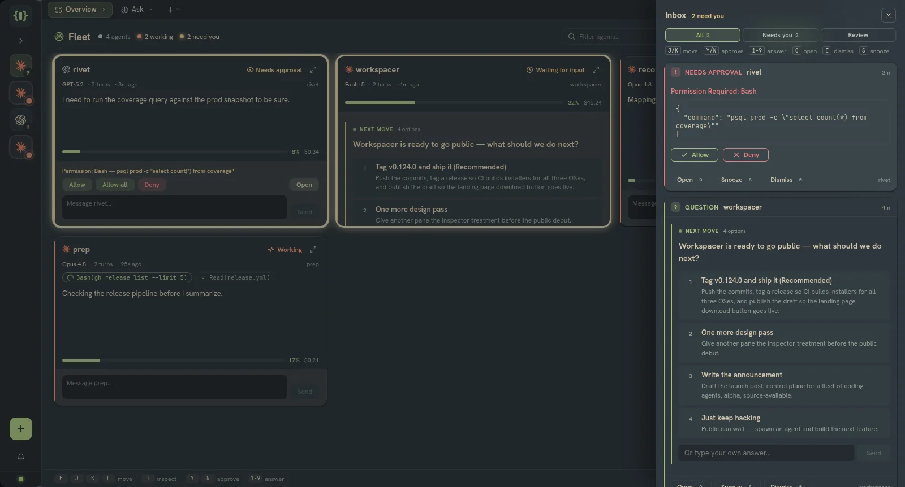
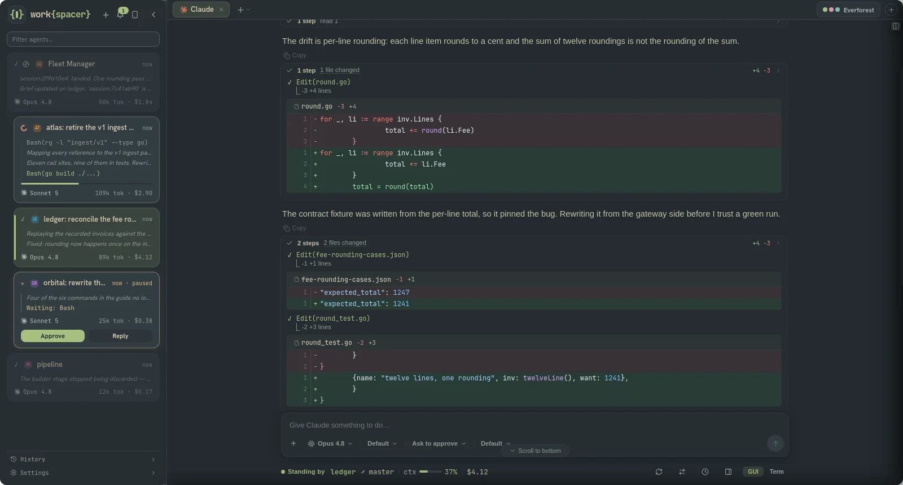
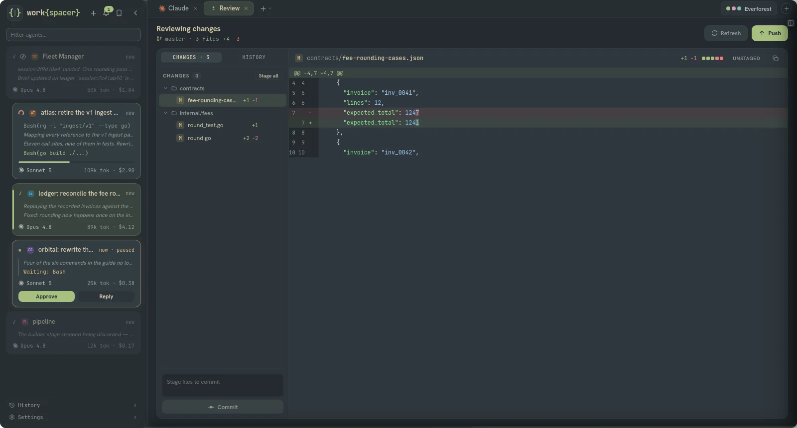
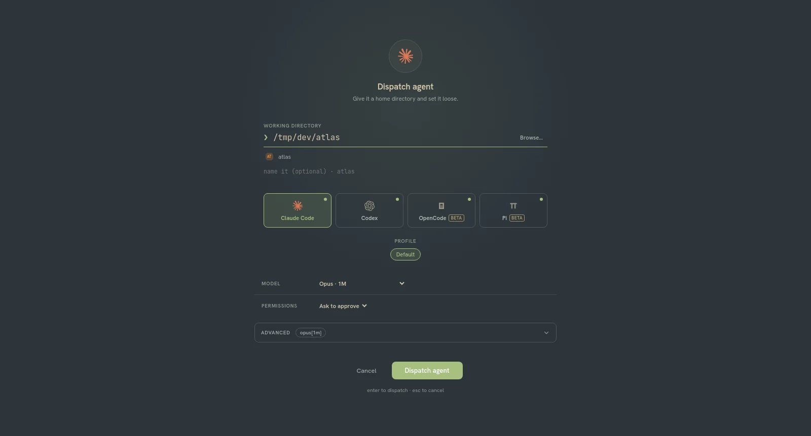
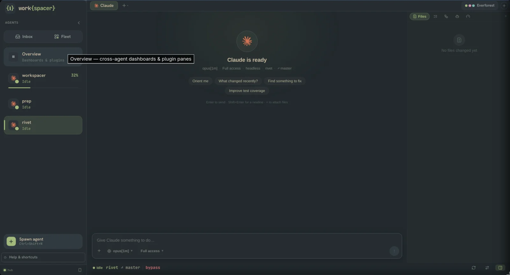
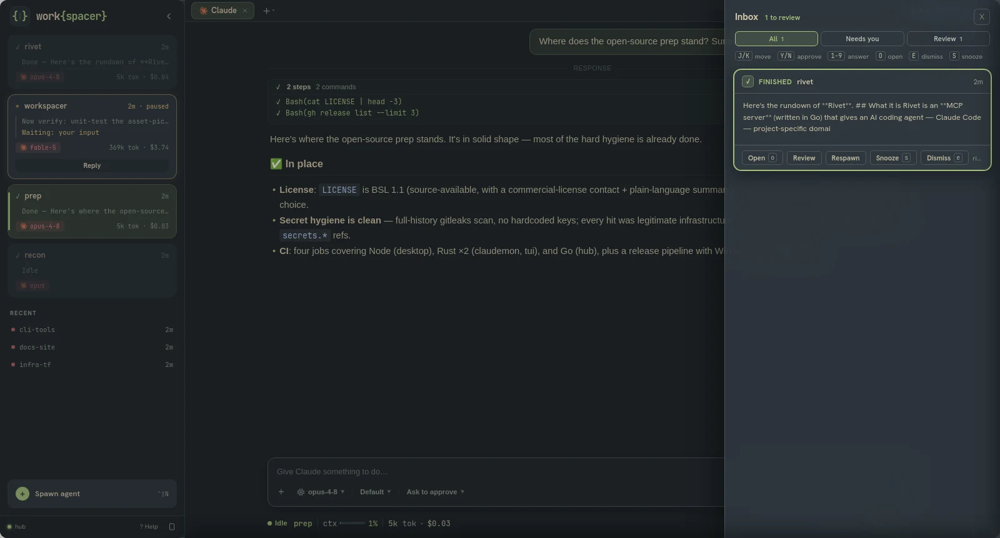
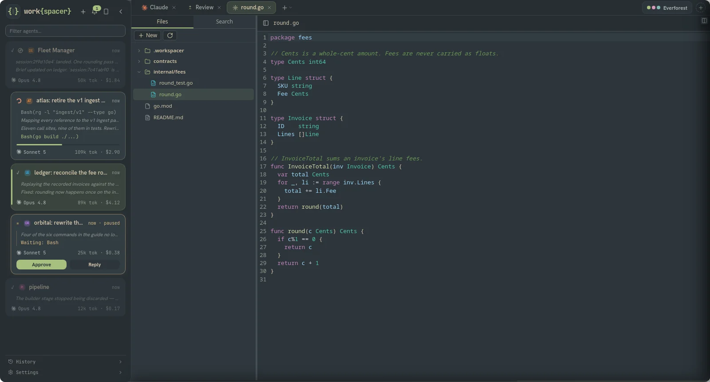
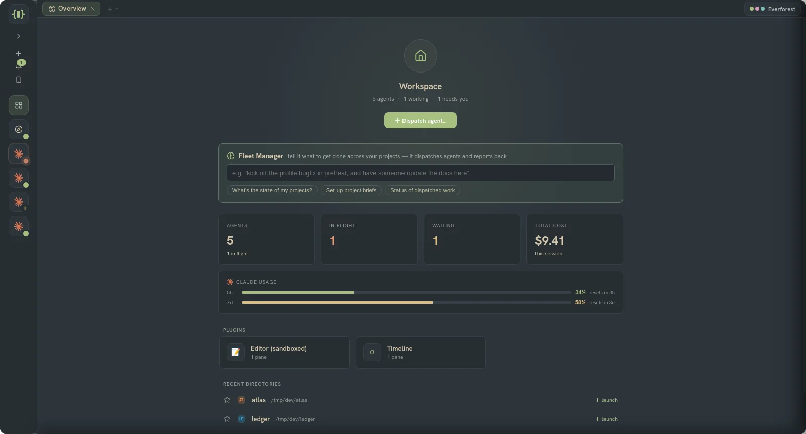
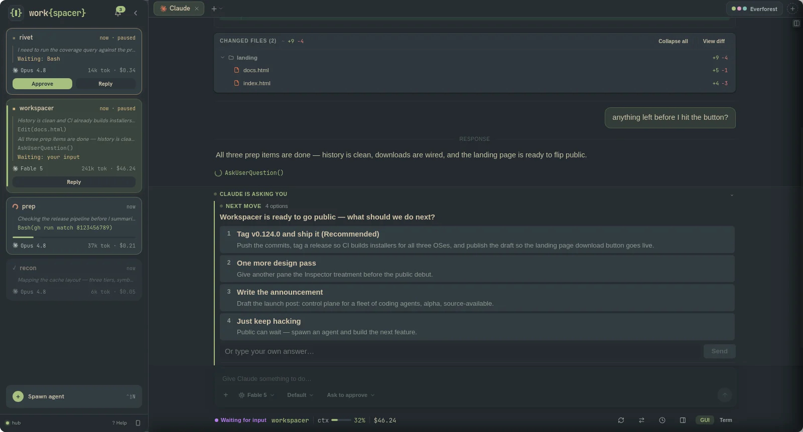

A local-first control plane and IDE for agent-driven development. Run as many long-lived agents as you want, across Claude Code, Codex, and OpenCode. Watch them all from one place, step in only when one needs you, and ship what they wrote without leaving the window.
You cannot watch a whole fleet at once. work{spacer} keeps the ambient state in front of you so you only context-switch when it pays off.
A status dot per agent and a live "N need you / N working" count. The Triage Inbox collects everything waiting on you, and notifications stay quiet for the agent you are already watching.

Approve or deny in one key, answer questions inline, read diffs as they land, follow a clean work log, and attach files by drag, paste, or picker.

Git status and a unified diff with a file tree where the agent finished. Stage, commit, and push without dropping to a shell.

Spawn any of the supported coding agents from the same dialog. Pick a repo, a model, a profile, and go. They all land in the same fleet.
The original. Observed through hooks, the JSONL transcript, and the status line, so context %, cost, and rate limits all flow into the fleet.
Driven over codex app-server, JSON-RPC across stdio. Turns, items, token usage, and approval requests translate straight into the same model.
Driven over opencode serve, a headless HTTP server with a typed SSE event stream. Messages, usage, and approvals map cleanly onto the fleet.
Every provider lands in the same Fleet Deck with the same telemetry — the same approval cards, the same multiple-choice question picker, live token/cost, and a one-key interrupt that stops the turn without killing the session. Tier-1 runs an agent in a plain terminal pane; Tier-2 drives the agent's own protocol so the GUI, approvals, and usage all light up. A fourth adapter, Pi, ships in beta.
Each agent keeps its own tabs and panes in the daemon, separate from the window. ls the highlights:
Arrange it your way: fleet and focus modes flip the whole chrome in one key without remounting a pane, the Fleet Deck radar shows every agent at once, and there's a command palette, remappable keybindings with leader chords, 18 built-in themes plus a theme maker, and layout templates with auto-resume after a restart or crash.
The desktop app spawns and supervises the daemons. Sessions live in the daemon, so closing a window never kills an agent.
The primary GUI. Spawns the daemons, renders the panes, forwards events to every client.
Owns the sessions and PTYs, runs the per-provider adapters, streams conversation, usage, and git.
The event bus, supervisor, capability router, plugin system, and MCP facade.
Straight from a working session — the everforest theme, one agent fleet, real work.






work{spacer} is in alpha — expect sharp edges. Grab the installer for your OS below, or the headless server tarball (workspacer-server-<os>-<arch>) for a box with no desktop. It's open source (MIT): the entire codebase is on GitHub — read it, build it yourself, or send a patch.
download latest read the docs view on github